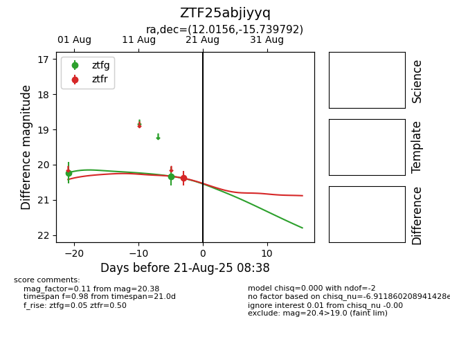

Target ZTF25abjiyyq at 2025-08-21 08:38, see:
FINK: fink-portal.org/ZTF25abjiyyq
Lasair: lasair-ztf.lsst.ac.uk/objects/ZTF25abjiyyq
ALeRCE: alerce.online/object/ZTF25abjiyyq
alt names
ZTF25abjiyyq (ztf,alerce)
coordinates:
equatorial (ra, dec) = (12.0156,-15.73979)
galactic (l, b) = (118.8249,-78.58461)
photometry
last ztfg=20.33, ztfr=20.38
2 ztfg, 1 ztfr detections
